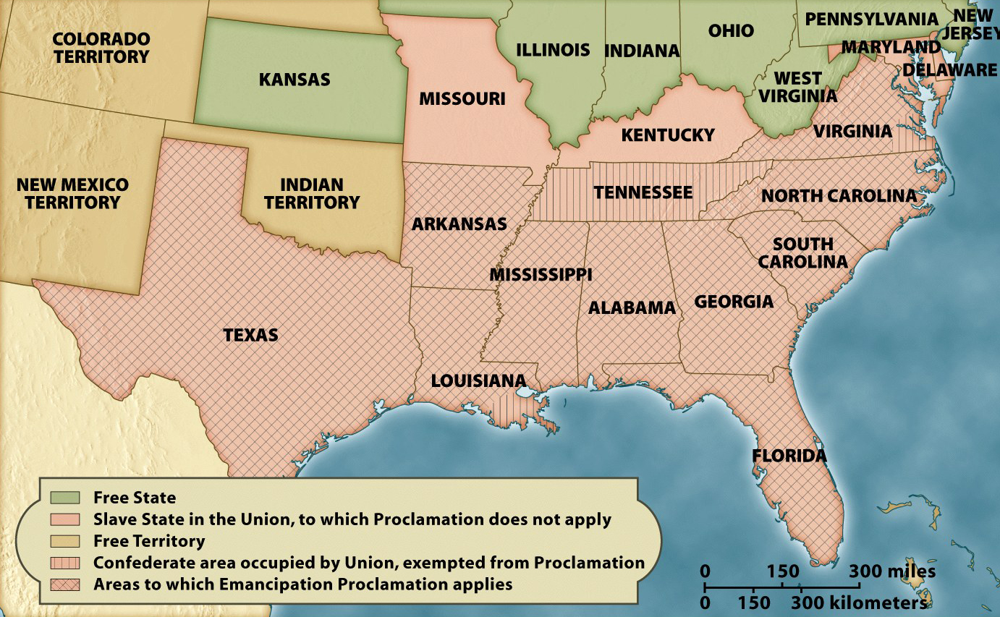

The Emancipation Proclamation

On September 22, 1862, President Lincoln issued the preliminary Emancipation
Proclamation, in which he made clear his intent to end slavery in any territory that had
not returned to the Union by January 1, 1863. On that date he made good on his threat,
outlawing slavery in all states and counties still in a state of rebellion, while
specifically protecting it in all states and counties that were under the control of his
government.
Because of the way in which the Emancipation Proclamation was constructed, it has often been
said that the document did not free a single slave. This is not correct. What IS
true is that it did not immediately free any slaves, since it applied--by
definition--only to places that did not recognize the president's authority. However, the
document gave Union soldiers the legal ability to free any slaves they encountered,
and they did so by the tens of thousands in the two years after it was issued.
Further, the Proclamation transformed the Union's mission in the Civil War, setting the
nation on a path that culminated in the Thirteenth Amendment to the Constitution and the
formal end of slavery across the land.
Note: Click on the image for a larger version.
Source: Eric Foner, Give Me Liberty! An American History (New York: W. W. Norton & Company, 2008).
|

{kind=link}